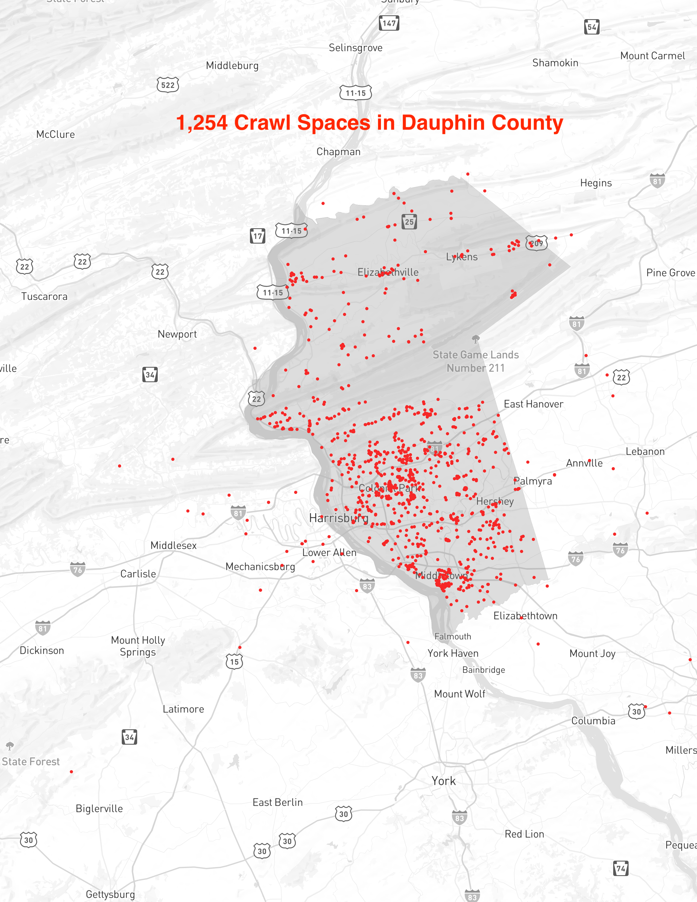

Quick Facts:
- Location: South Central Pennsylvania
- County: Dauphin County
- Population: Approximately 50,000 (city proper)
- Metro Area Population: Over 1.2 million
- Founded: 1791
- Key Neighboring Counties: Cumberland, Lancaster, York, Lebanon, Perry
- Area: 11.4 square miles
- Median Household Income: $41,000
Dauphin County
Throughout the pandemic, different countries took different approaches to regulation. As the image below shows, the severity of 'stay at home' restrictions varied significantly by country over the course of the first wave of Covid-19.
Residential Crawl Space Data Points
According to Dauphin County Tax Assessment Office
1,254 homes are located on crawl spaces in Dauphin County.
To compare rates of panic buying, I used aggregate mobility data from Google and Apple, accessed via an API.
I normalised the datasets by identifying each country's 'Day 0' - the first day on which Level 2 government restrictions came into play - and plotted levels of mobility before and after this date. Each chart below shows how the level of footfall at grocery shops relative to average footfall across several months in the pre-pandemic period.
United Kingdom
In the UK, the first lockdown measures legally came into force on 26 March 2020 ('Day 0').
As the graph shows, average footfall in grocery stores peaked at a rate 27% higher than the average for the previous period, but quickly fell following the introducion of lockdown restrictions.
Spain
Spain's 'Day 0' came 12 days earlier than the UK's, on 14 March 2020. Levels of footfall peaked at 33% - a much higher level than in the UK - and fell to lows of -90% in the weeks after lockdown measures were introduced.
South Korea
Unlike Spain and the UK, South Korea did not observe a big spike in footfall at grocery stores before the introduction of lockdown measures.
A possible explanation for this lies in the fact that South Korea was one of the few countries to "phase-in" their lockdown measures. Unlike the UK and Spain, South Korea introduced 'Level 1' regulations early on in the pandemic (on Feb 23 2020), and only introduced 'Level 2' (lockdown) regulations several weeks later.
Methods
Data analysis was conducted using Python, SQL and D3.js. To produce this piece, I used two data sources accessed via API through the OxCOVID database (Mahdi et al. 2020). First, Google mobility data from March 1 to May 1 2020 were used as a measure of footfall in grocery stores and pharmacies. In the mobility dataset, each value of daily mobility represents the percentage difference in mobility from the median value of the corresponding day in the period January 3 to February 6 2020.
Second, I sourced data about whether ‘Stay At Home’ restrictions were in place from the Oxford Covid-19 Government Response Tracker (OxCGRT) (Hale et al. 2020). In OxCGRT’s schema, a ‘0’ implies no restrictions, a ‘1’ implies vulnerable groups were recommended to shield, a ‘2’ implies a curfew whereby people were allowed out at specific times of day, and a ‘3’ implies total confinement for multiple days at a time.